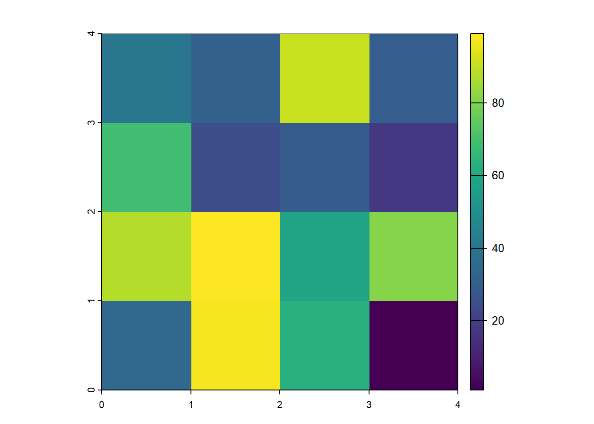
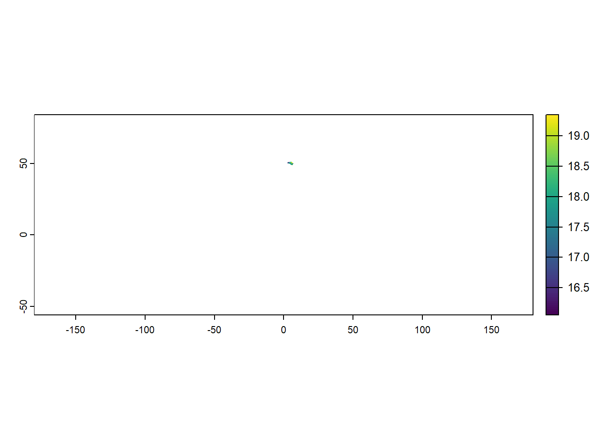
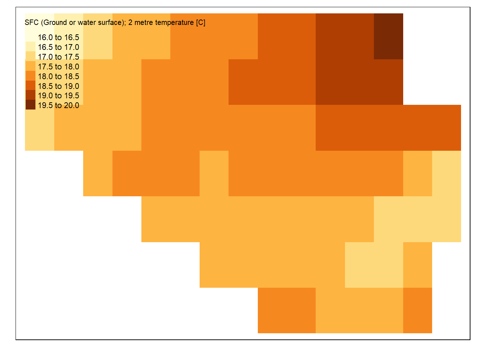
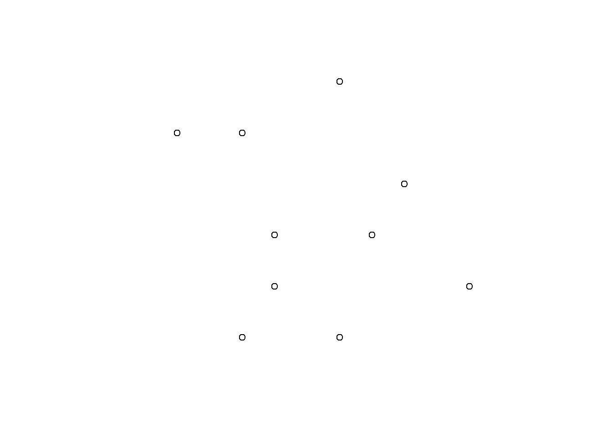
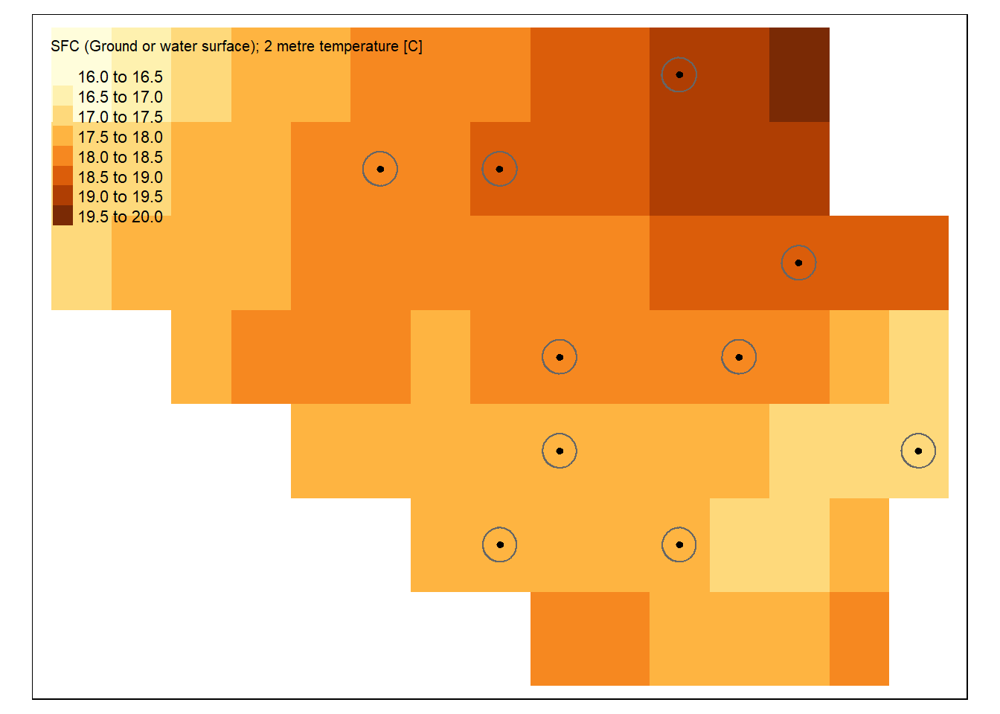

terra::rast()class : SpatRaster
dimensions : 180, 360, 1 (nrow, ncol, nlyr)
resolution : 1, 1 (x, y)
extent : -180, 180, -90, 90 (xmin, xmax, ymin, ymax)
coord. ref. : lon/lat WGS 84 (CRS84) (OGC:CRS84) 
terra::rast()class : SpatRaster
dimensions : 180, 360, 1 (nrow, ncol, nlyr)
resolution : 1, 1 (x, y)
extent : -180, 180, -90, 90 (xmin, xmax, ymin, ymax)
coord. ref. : lon/lat WGS 84 (CRS84) (OGC:CRS84) input_data <-
sample(1:100, 16) |>
matrix(nrow = 4)
raster_layer <- terra::rast(input_data)
raster_layerclass : SpatRaster
dimensions : 4, 4, 1 (nrow, ncol, nlyr)
resolution : 1, 1 (x, y)
extent : 0, 4, 0, 4 (xmin, xmax, ymin, ymax)
coord. ref. :
source(s) : memory
name : lyr.1
min value : 5
max value : 93 terra::plot(raster_layer)
RAFAIK terra is the most commonly used package for raster data in R.
Some other developments, e.g., in the stars package, also implement an interface to simple features in sf.
The terra package also helps to use more elaborate zonal statistics. The same holds for the spatstat package.
temp_6_2019 <-
terra::rast("./data/temp_6_2019.tif")
temp_7_2019 <-
terra::rast("./data/temp_7_2019.tif")
temp_6_2019class : SpatRaster
dimensions : 561, 1440, 1 (nrow, ncol, nlyr)
resolution : 0.25, 0.25 (x, y)
extent : -180.125, 179.875, -56.125, 84.125 (xmin, xmax, ymin, ymax)
coord. ref. : lon/lat WGS 84 (EPSG:4326)
source : temp_6_2019.tif
name : SFC (Ground or water surface); 2 metre temperature [C]
min value : 258.1914
max value : 313.1426 terra::plot(temp_6_2019)terra::plot(temp_7_2019)
Working with raster data is straightforward - quite speedy - yet not as comfortable as working with sf objects
For example, to calculate the mean we would use:
terra::global(temp_6_2019, fun = "mean", na.rm = TRUE) mean
SFC (Ground or water surface); 2 metre temperature [C] 289.9985Although raster data are simple data tables, working with them is a bit different compared to, e.g., simple features.
temp_6_2019_celsius <-
temp_6_2019 - 273.15
temp_7_2019_celsius <-
temp_7_2019 - 273.15
temp_6_2019_celsiusclass : SpatRaster
dimensions : 561, 1440, 1 (nrow, ncol, nlyr)
resolution : 0.25, 0.25 (x, y)
extent : -180.125, 179.875, -56.125, 84.125 (xmin, xmax, ymin, ymax)
coord. ref. : lon/lat WGS 84 (EPSG:4326)
source(s) : memory
varname : temp_6_2019
name : SFC (Ground or water surface); 2 metre temperature [C]
min value : -14.95859
max value : 39.99258 
Although raster data are simple data tables, working with them is a bit different compared to, e.g., simple features.
temp_diff <-
temp_7_2019 - temp_6_2019
temp_diffclass : SpatRaster
dimensions : 561, 1440, 1 (nrow, ncol, nlyr)
resolution : 0.25, 0.25 (x, y)
extent : -180.125, 179.875, -56.125, 84.125 (xmin, xmax, ymin, ymax)
coord. ref. : lon/lat WGS 84 (EPSG:4326)
source(s) : memory
varname : temp_7_2019
name : SFC (Ground or water surface); 2 metre temperature [C]
min value : -6.845703
max value : 12.255859 
We can subset vector data by simply filtering for specific attribute values. For example, to subset a world map only to Belgium, we can use the Tidyverse for sf data:
world <- rnaturalearth::ne_countries(
scale = "medium",
returnclass = "sf")
# Subset to relevant variables
world <- world |>
dplyr::select(admin, geometry)
# Subset to Belgium
belgium <- world |>
dplyr::filter(admin == "Belgium")
sf::st_geometry(belgium)Geometry set for 1 feature
Geometry type: MULTIPOLYGON
Dimension: XY
Bounding box: xmin: 2.524902 ymin: 49.51089 xmax: 6.364453 ymax: 51.49111
Geodetic CRS: WGS 84MULTIPOLYGON (((4.226172 51.38647, 4.304492 51....Cropping is a method of cutting out a specific slice of a raster layer based on an input dataset or geospatial extent, such as a bounding box. Cropping reduces the spatial extent of a raster to a specified rectangular bounding box.
cropped_temp_6_2019 <-
terra::crop(temp_6_2019_celsius, belgium)
Masking is similar to cropping, yet values outside the extent are set to missing values (NA). Masking creates a precise match between the spatial extent of your shape and the raster values.
masked_temp_6_2019 <-
raster::mask(temp_6_2019_celsius, terra::vect(belgium))
Cropping first and masking afterwards combines both processes.
temp_6_2019_belgium <-
terra::crop(temp_6_2019_celsius, belgium) |>
raster::mask(terra::vect(belgium))Breaking News: tmap 3.x is retiring. Please test v4, e.g. with
remotes::install_github('r-tmap/tmap')
random_points <-
temp_6_2019_belgium |>
terra::spatSample(size = 10, na.rm = TRUE, as.points = TRUE) |>
sf::st_as_sf() |>
dplyr::select(-1)plot(random_points)
Raster data are helpful when we aim to - apply calculations that are the same for all geometries in the dataset - extract information from raster fast and efficient
library(tmap)
tm_shape(temp_6_2019_belgium) +
tm_raster() +
tm_shape(belgium) +
tm_borders(col = "black", lwd = 2) +
tm_shape(random_points) +
tm_dots(size = .25)To extract the raster values at a specific point by location, we use the following:
terra::extract(temp_6_2019_belgium, random_points, ID = FALSE) SFC (Ground or water surface); 2 metre temperature [C]
1 18.34414
2 17.61172
3 17.94180
4 18.66055
5 17.19375
6 18.12148
7 18.82852
8 19.13711
9 19.34609
10 18.19375This information can be added to an existing dataset (our points in this example):
random_points <-
random_points |>
dplyr::mutate(
temp_value =
as.vector(
terra::extract(temp_6_2019_belgium, random_points, ID = FALSE, raw = TRUE)
)
)
random_pointsSimple feature collection with 10 features and 1 field
Geometry type: POINT
Dimension: XY
Bounding box: xmin: 3.25 ymin: 49.75 xmax: 6.25 ymax: 51.25
Geodetic CRS: WGS 84
geometry temp_value
1 POINT (4.25 51) 18.34414
2 POINT (4.5 50) 17.61172
3 POINT (3.25 50.5) 17.94180
4 POINT (4.75 51.25) 18.66055
5 POINT (6.25 50.25) 17.19375
6 POINT (4.75 49.75) 18.12148
7 POINT (5.75 50.75) 18.82852
8 POINT (5.25 51) 19.13711
9 POINT (5.5 51) 19.34609
10 POINT (4.25 50.75) 18.19375Sometimes, extracting information 1:1 is not enough - too narrow - missing information about the surroundings of a point
tm_shape(temp_6_2019_belgium) +
tm_raster() +
tm_shape(
sf::st_buffer(random_points, 5000)
) +
tm_dots(size = .1) +
tm_borders()
Jünger, 2021
So far, raster data have been unidimensional: we only had one attribute for each dataset.
But they can also be stacked:
temp_stack <- c(temp_6_2019, temp_7_2019)
temp_stackclass : SpatRaster
dimensions : 561, 1440, 2 (nrow, ncol, nlyr)
resolution : 0.25, 0.25 (x, y)
extent : -180.125, 179.875, -56.125, 84.125 (xmin, xmax, ymin, ymax)
coord. ref. : lon/lat WGS 84 (EPSG:4326)
sources : temp_6_2019.tif
temp_7_2019.tif
names : SFC (Ground or ~temperature [C], SFC (Ground or ~temperature [C]
min values : 258.1914, 258.7051
max values : 313.1426, 314.7812 stars Package
https://raw.githubusercontent.com/r-spatial/stars/master/images/cube2.png